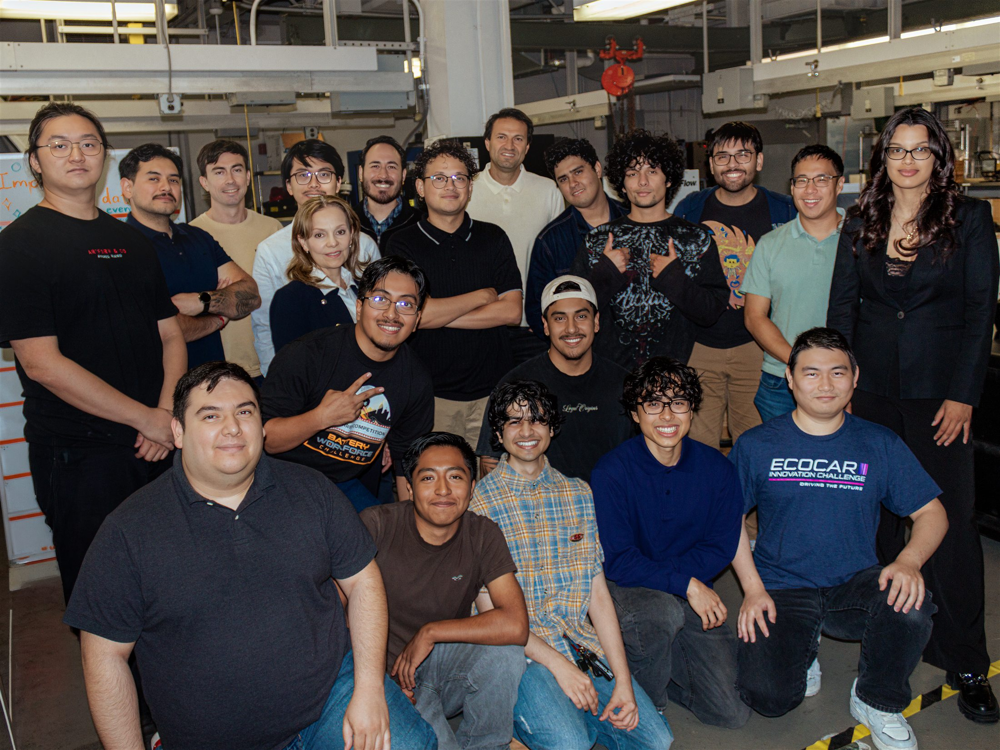

Learn together
School engagement, lab tours and technical demonstrations make the team’s work visible and approachable.
Outreach
Cal State LA EcoCAR brings students and communities closer to advanced mobility while learning from the people who understand urgent transportation and emergency-response challenges firsthand.
School engagement, lab tours and technical demonstrations make the team’s work visible and approachable.
Affected communities and fire-service professionals can help define which emergency-response functions are useful and responsible.
The Wildfire Command Vehicle is an active concept in development.
Where outreach happens

01
Community outreach
Through school engagement, lab tours and technical demonstrations, team members share what it takes to build an advanced vehicle and invite students to imagine a place for themselves in engineering.
On September 11, 2026, Cal State LA EcoCAR participated in a high-school outreach event, welcoming visiting students to B-13 for an EcoCAR lab tour.
These experiences give visitors a closer look at the team’s work while helping Cal State LA EcoCAR practice clear, welcoming technical communication.

02
Government & industry outreach
Active concept in developmentCal State LA is working with Stellantis on the development of an electrified Jeep Cherokee for off-road applications. In response to the significant wildfire impacts experienced in Southern California, the team selected a Wildfire Command Vehicle concept focused on search-and-rescue and emergency-response applications.
This direction extends the team’s workforce-development and vehicle-electrification experience into an application with direct relevance to clean mobility and emergency-response needs in Southern California.
The broader project lens includes preparedness and mitigation, while the developing vehicle concept remains centered on search-and-rescue and emergency response.
Why this matters
The supplied research points to mobility, communication and changing field information as connected challenges. These findings help define what the team should investigate.
Wildfires can block or damage roads and rail routes needed for evacuation and emergency response.
Smoke, reduced visibility, power interruptions and communications disruption can make response work more difficult.
Responders need timely field information while conditions change, and post-fire infrastructure hazards can continue after the flames.
Research directions
These are exploratory directions, not completed capabilities. Technical work and stakeholder input will determine what is useful, practical and responsible.
Explore how a command vehicle could help teams gather and communicate useful information when wildfire conditions disrupt normal operations.
Study how an electrified off-road platform could support access and response when transportation networks, power and visibility are under stress.
Investigate a fire-resilient reconnaissance-drone capability that could extend situational awareness while connecting with related engineering and entrepreneurship work.
The next conversation
The team wants to communicate with affected communities and fire-service professionals about new vehicle functions. Future updates will keep proposed features visibly separate from tested and validated results.
Contact the team